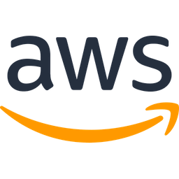

5. Infra as Code sử dụng Terraform
/
Terraform State & các phương án quản lý State
Giới thiệu
State (mặc định là file terraform.tfstate) là "bộ nhớ" của Terraform: nó ánh xạ mỗi resource trong code (ví dụ aws_instance.demo_instance) với resource thật trên AWS (ví dụ i-0abc123...), kèm toàn bộ thuộc tính.
Nhờ state, Terraform biết resource nào đã tồn tại để tính toán plan: cái gì cần tạo mới, sửa hay xoá. Mất state đồng nghĩa với việc Terraform "quên" toàn bộ hạ tầng nó đã tạo.
Ở các lab trước, state được lưu ngay trên máy local — phù hợp khi học, nhưng không phù hợp khi làm việc nhóm.
Đặc điểm chính của State
- Mapping code ↔ hạ tầng thật: lưu ID, ARN, IP và mọi thuộc tính của resource đã tạo.
- Hiệu năng: Terraform dùng state làm cache, không cần quét toàn bộ tài khoản AWS mỗi lần plan.
- Dependency & output: lưu thứ tự phụ thuộc giữa resource và giá trị output (
terraform output đọc từ state).
- Chứa thông tin nhạy cảm: state lưu dạng text thuần, có thể chứa password DB, private key, user_data... → phải bảo vệ như secret.
- Locking: khi 2 người cùng chạy
apply, state phải được khoá để tránh ghi đè lẫn nhau và làm hỏng state.
- Backend: nơi lưu state có thể cấu hình: local (mặc định), S3, HCP Terraform (Terraform Cloud), Azure Blob, GCS...
Mô hình kiến trúc: Remote state với S3 backend
flowchart LR
subgraph Team["👥 Team DevOps"]
direction TB
A["
Engineer A
terraform apply"]
B["
Engineer B
terraform plan"]
CI["⚙️ CI/CD Pipeline"]
end
Git["
 Git
Gitcode .tf (không có state)"]
subgraph Backend["☁️ S3 Backend"]
direction TB
S3["
 S3 bucket
S3 bucketversioning · encryption
dev/terraform.tfstate
test/terraform.tfstate"]
Lock["🔒
Lock fileterraform.tfstate.tflock"]
end
AWS["

AWS Resources"]
A --> Git
B --> Git
CI --> Git
A -->|"1. lock
2. đọc/ghi state
3. unlock"| S3
B -->|"đọc state"| S3
CI --> S3
S3 --- Lock
A -->|"create/update"| AWS
Code lưu trên Git, state lưu tập trung trên S3. Khi một người đang apply, lock file ngăn người khác ghi state cùng lúc.
Các phương án quản lý State
| Phương án | Ưu điểm | Nhược điểm | Khi nào dùng |
|---|
| Local (mặc định) | Đơn giản, không cần cấu hình | Mất máy là mất state; không chia sẻ được; không lock giữa nhiều người | Học tập, thử nghiệm cá nhân |
| Commit state lên Git (Github) | Chia sẻ được, có lịch sử version | Lộ secret trong repo; dễ conflict khi merge; không có lock; dễ quên pull/push → ghi đè state | Không khuyến khích; chỉ nên biết để tránh |
| S3 backend | Tập trung, có lock, versioning để khôi phục, mã hoá, phân quyền bằng IAM; chi phí gần như bằng 0 | Phải tạo bucket trước (bài toán "con gà – quả trứng") | Lựa chọn phổ biến nhất cho dự án trên AWS |
| HCP Terraform (Terraform Cloud) | Quản lý state, lock, chạy plan/apply trên cloud, UI, policy | Tính phí theo số resource khi vượt free tier; phụ thuộc dịch vụ bên ngoài | Team lớn cần quy trình, phân quyền chi tiết |
Thay đổi quan trọng: trước đây S3 backend cần thêm một DynamoDB table để lock state (tham số dynamodb_table).
Từ Terraform 1.10, S3 backend hỗ trợ lock trực tiếp bằng file .tflock trên S3 với tham số use_lockfile = true; tham số dynamodb_table đã bị đánh dấu deprecated. Khoá học sử dụng cách mới.
Trade-off
✅ Nên dùng remote state khi
- Có từ 2 người trở lên cùng thao tác hạ tầng.
- Chạy Terraform trong CI/CD pipeline.
- Hạ tầng là môi trường thật (staging, production).
- Cần chia sẻ output giữa các project (data source
terraform_remote_state).
⚠️ Lưu ý
- Bật versioning và encryption cho bucket chứa state; chặn public access.
- Mỗi môi trường/stack một
key (file state) riêng để giảm phạm vi ảnh hưởng.
- Không xoá/sửa tay file state; dùng lệnh
terraform state ....
- Bucket chứa state nên được tạo thủ công hoặc bằng một stack riêng.
Các lệnh làm việc với State
| Lệnh | Mục đích |
|---|
terraform state list | Liệt kê resource đang được quản lý |
terraform state show <address> | Xem chi tiết thuộc tính của một resource |
terraform state mv <cũ> <mới> | Đổi tên/di chuyển resource trong state (ví dụ khi refactor sang module) mà không xoá resource thật. Có thể dùng block moved trong code thay thế. |
terraform state rm <address> | Bỏ quản lý một resource (resource thật vẫn còn trên AWS) |
terraform import / block import | Đưa resource đã tạo tay trên Console vào state để Terraform quản lý |
terraform plan -refresh-only | Phát hiện drift: hạ tầng thật bị sửa tay khác với state |
terraform force-unlock <LOCK_ID> | Gỡ lock bị "kẹt" khi lệnh trước bị ngắt giữa chừng (chỉ dùng khi chắc chắn không ai đang chạy) |
Use Cases
👥 Làm việc nhóm
3 DevOps engineer cùng quản lý hạ tầng của một dự án; state trên S3 giúp mọi người luôn làm việc trên cùng một phiên bản và không ghi đè lẫn nhau.
🔁 CI/CD cho hạ tầng
Github Actions/Jenkins chạy terraform apply sau khi merge Pull Request; runner là máy tạm thời nên bắt buộc state phải nằm ở remote backend.
⏪ Khôi phục sự cố
State bị hỏng sau một lần apply lỗi — nhờ S3 versioning, có thể khôi phục lại phiên bản state trước đó.
Thông tin bổ sung
- Tài liệu S3 backend: developer.hashicorp.com/terraform/language/backend/s3.
- Khối
backend không dùng được biến (var.xxx). Nếu muốn linh hoạt, dùng partial configuration: terraform init -backend-config="bucket=...".
- Chuyển state từ local lên S3: thêm khối backend rồi chạy
terraform init -migrate-state.
- Chi phí lưu state trên S3 gần như bằng 0 (vài KB tới vài MB, vài request mỗi lần chạy).